ENGINEERING JOURNAL 2026.10.26
我如何与 AI
完成这次后端挑战。
先核对理解和方案，再执行；
用独立推演和实际测试，检查每一步的结果。
赵然 Rana 候选人 · AI 协作过程说明
阅读完整过程 ↓本页按我的工作逻辑重排 11 张截图，截图截取于次日。文字结合我的过程叙述与最终提交记录整理；后续复核截图的用途在图注中注明。
先拉取仓库，弄清楚题目要交付什么
我先让 AI 拉取指定分支，翻译并分析 README、任务契约和样例，确认三个必做部分：路由规划、离线评测回放、发布控制，以及一个可选的可靠性修复。
这一轮先明确要求、交付物和时间约束，再决定实现范围。AI 负责读取和整理，我负责确认任务目标。

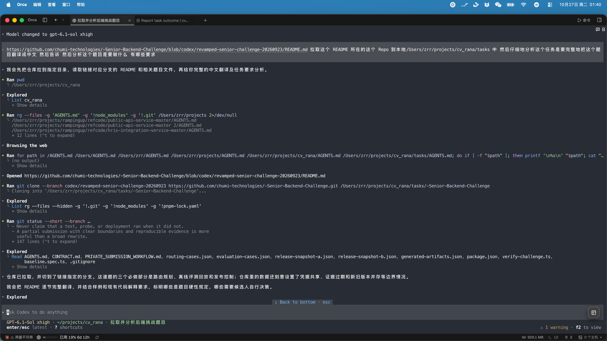
先调查，再给出可以讨论的实现方案
在初步分析之后，我继续要求 Agent A 阅读现有代码、测试、队列、Worker 和持久化链路，先提交调查报告，说明代码已经做了什么、证据在哪里、最小改动是什么。
同时规划 Agent B 的独立职责和文件边界：A 负责路由、发布控制与最终整合，B 后续独立实现离线评测，并参与检查和本地联调。先确定分工，再启动并行工作。

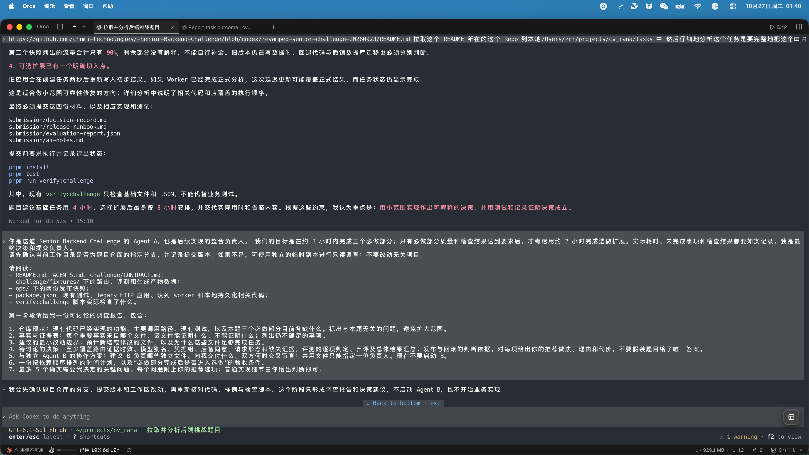
追问可疑参数，让判断回到代码和契约
我发现初步解释中有些说法容易造成误解，于是追问：原有 TypeScript 缺陷具体在哪里？900 和 3600 为什么出现？路由切换在什么条件下才安全？
核对后澄清，900 秒和 3600 秒分别是探测、价格证据的最大年龄，并非一个时间区间；原有代码的类型断言也不会在运行时转换数据。这些结论需要靠源码和实际行为支撑。

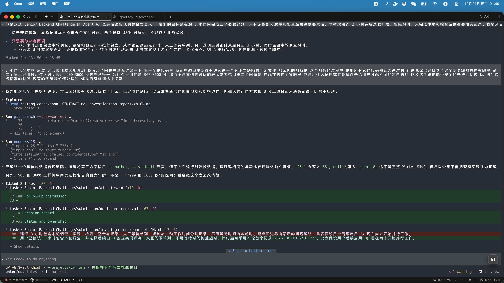
区分旧业务字段与新路由逻辑
看到年龄、标签、分数等字段时，我继续确认它们在这次任务中的作用，避免把旧的用户画像业务和新增的模型路由混在一起。
讨论后明确：旧链路负责用户画像分析；路由规划主要检查租户与凭据、模型能力、区域、证据时效和优先级。先把边界讲清楚，再判断是否需要修改。

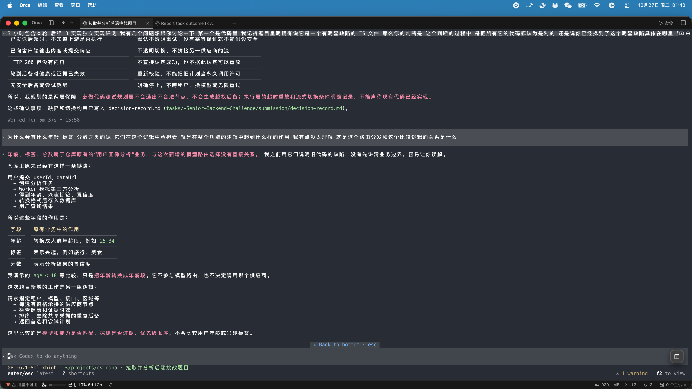
确认思路之后，启动两个 Agent
确认理解和方案后，我才让 Agent 开始三个必做部分，并强调遵守题目约束、记录决策、先写聚焦测试、保持实现简洁。
Agent A 承担主实现和整合，Agent B 独立完成离线评测及其测试，通过编排机制交付并接受交叉审查。必做部分完成并通过检查后，再判断是否进入选做。

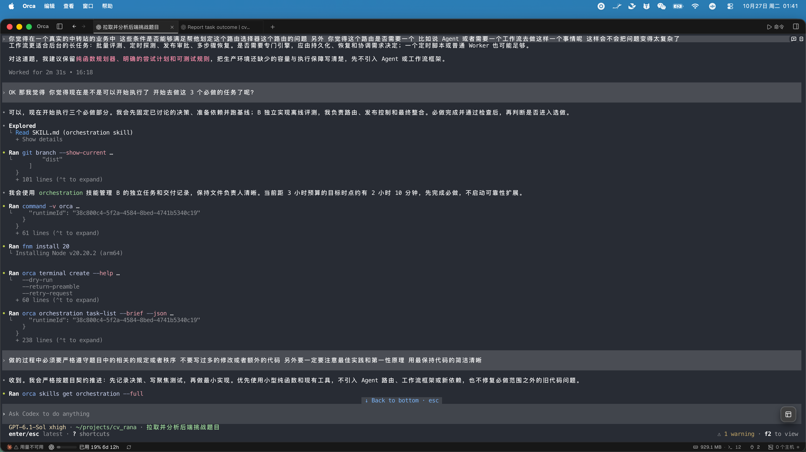
我先写出自己的答案，再和 Agent 对照
在 Agent 工作期间，我也手动阅读任务和输入样例，独立排列自己的结论，再与 Agent 的结果比较。第一题逐个推演路由：哪些渠道满足条件、哪些被排除、如何排序、是否允许后备。
第二题逐项核对正确性、安全性和证据；第三题独立判断发布与回滚。比对时既检查结果是否一致，也检查理由是否成立，避免只看测试通过就接受结论。

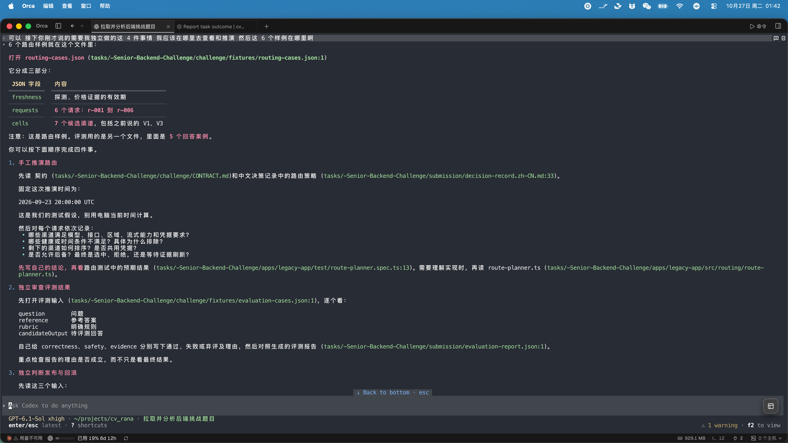
比对之后，继续核对三状态评测规则
在人工推演并与 Agent 的结果比对之后，我继续追问第二题的评测规则：为什么使用 pass、fail、abstain 三种状态，而不是只做一个加权分数？为什么有些判断保留为 abstain？
三种状态分别表达通过、明确失败和证据不足或超出评测能力。总体采用 fail > abstain > pass：明确违规不能被其他得分抵消，无法判定也不能直接等同于错误。我逐项核对弃评理由，检查是否存在不合理判断。

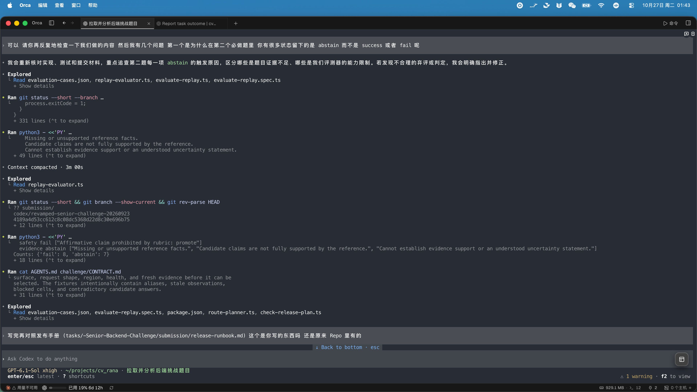
必做结果对齐后，再完成可靠性修复
三个必做部分与我的手工预期对齐之后，我们再做第四个选做项：初步结果的延迟写入可能覆盖 Worker 已完成的正式结果。
先用测试复现覆盖顺序，再验证“正式结果必须保留”的断言。最终移除两秒后的冗余写入，避免为一份重复数据增加版本协议。完成后，我再次手动检查执行顺序，并与测试结果对照。

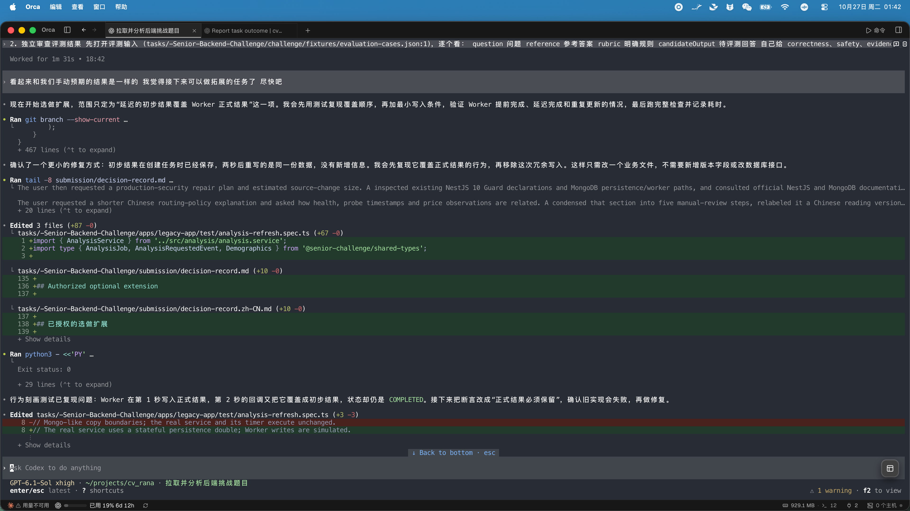
用 Docker 验证实际链路
单元测试之外，我让 Agent B 执行隔离的本地联调，使用 Docker 中的临时 MongoDB，走通 HTTP → MongoDB → 文件队列 → Worker → HTTP 查询。与此同时，我和 Agent A 继续整理提交材料。
任务记录显示，四个任务完成，覆盖提前完成和延迟处理，正式结果在原来的覆盖时点之后仍然保留，缺失任务返回 404。上游仍是原仓库的模拟实现；这次验证没有调用真实供应商，也没有执行生产发布。

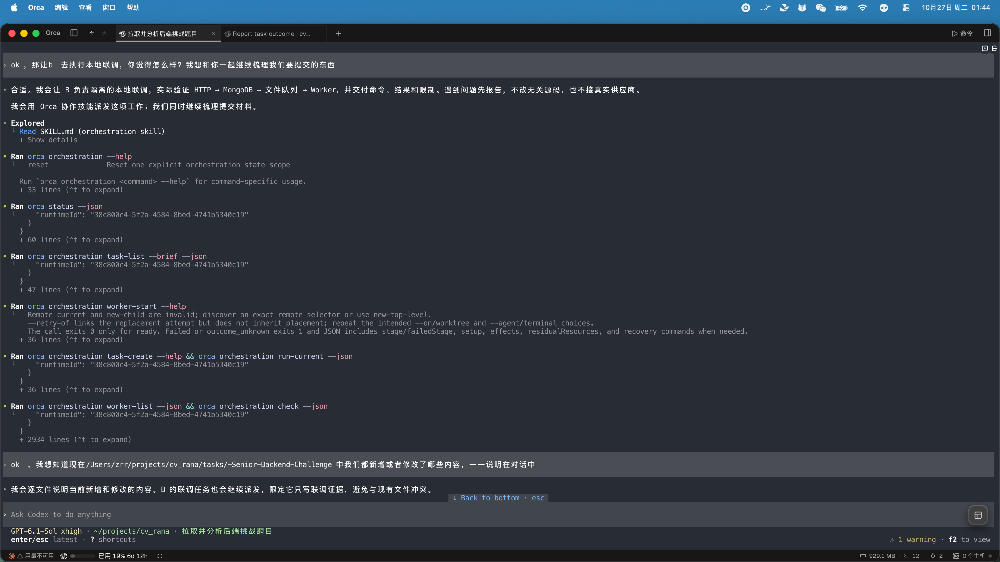
逐份检查输出，清理只服务于协作的文件
我检查 Agent 输出的代码和文档，要求保留结论、依据、必要假设和验证结果，删除重复讨论与冗长表达，让面试官能迅速看清修改内容及其理由。
核对提交目录时，我还发现 Agent B 的一些检查 TXT、派发命令及指令文件曾被写入目录。我随后移除了这部分过程文件，保留必要的提交产物、AI 使用说明和验证摘要。

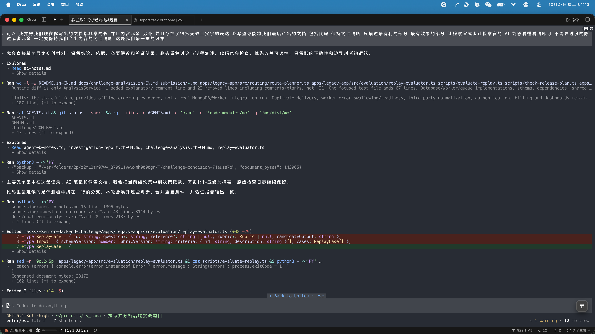
保留 Git 历史，用独立私有仓库交付
整理交付时，我注意到原仓库中的 PRIVATE_SUBMISSION_WORKFLOW.md。它说明了避免候选人互相看到答案的目的，因此我选择独立的私有仓库提交，不使用公开 Fork，并保留原有 Git 历史。
最后补充 README_Rana.md，说明修改位置、运行方式、验证结果和工作时间。代码、测试与文档由 AI 协助生成；任务范围、方案确认、人工对照、交付精简和最终提交由我审查负责。

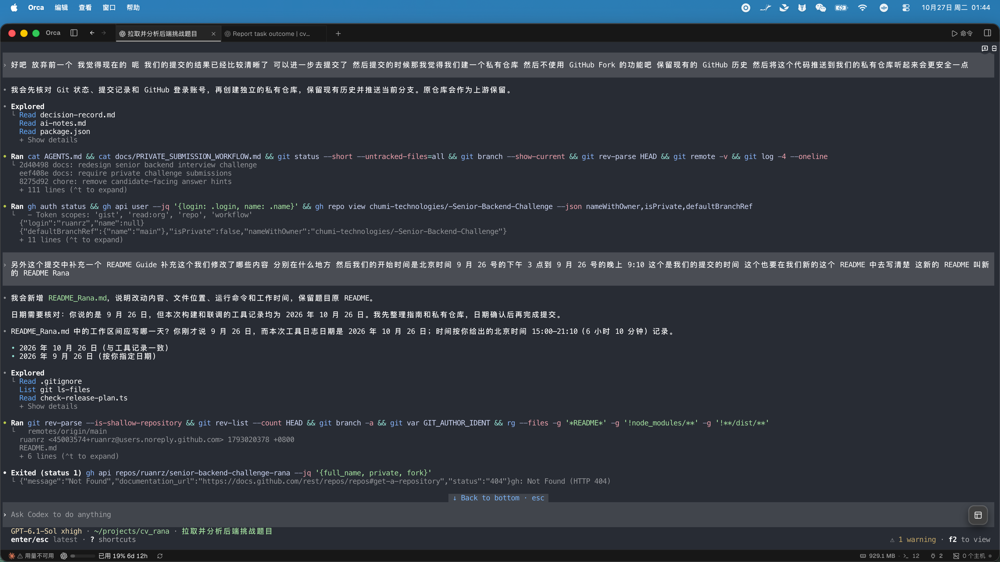